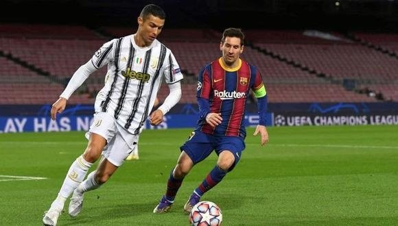

El fútbol es para algunos un juego y para otros una forma de vida. Hay quien lo usa como negocio o lo sigue como ideología. Llega a considerarse una pasión e incluso representa una religión. Forma parte del mundo actual, de la sociedad de masas que todo lo envuelve. Está presente en cualquier parte del mundo y tras él hay intereses ocultos. Unos pocos lo utilizan como instrumento de poder. Un poder para hacer dinero, controlar y manipular.
Te enseña a superarte, afrontar las dificultades, descubrir que puedes surgir del fondo y superar los prejuicios. Que cada uno tiene un rol y que es fundamental que cada uno lo cumpla para lograr el objetivo. El fútbol es un deporte maravilloso y sin dudas te forma para la vida y el trabajo en equipo.
